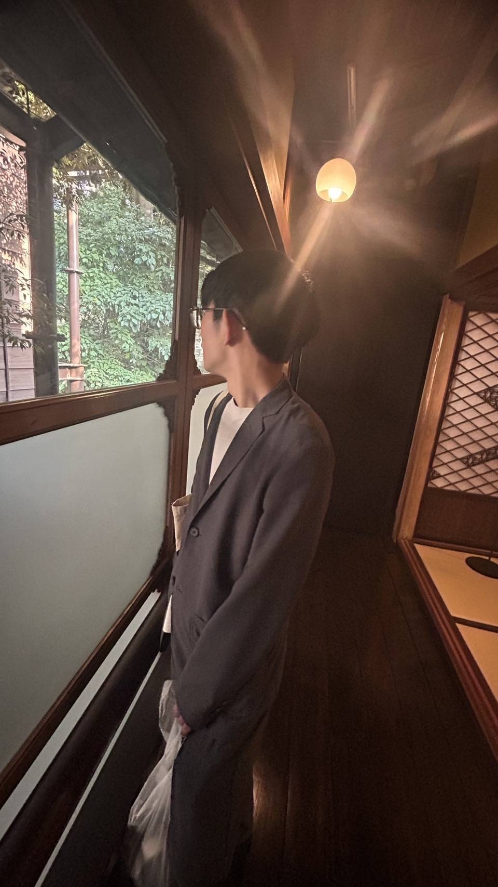

Web Card / 2026
01—03


Front-end engineer / Community host
山田太郎
YAMADA TARO
新卒2年目のフロントエンドエンジニア
赤羽ゆるもく会 主催
つくることで、毎日を少しだけ面白く。
01
About
フロントエンドを中心に、使う人の体験まで考えたWebサービスを作っています。個人開発やコミュニティ運営を通して、技術と人が交わる場を増やしています。
02
Highlights
- 伏せ太郎 個人開発でサービスを制作・公開
- 赤羽ゆるもく会 技術と人が交わる勉強会を主催
- Conference / LT カンファレンスやLTに複数登壇